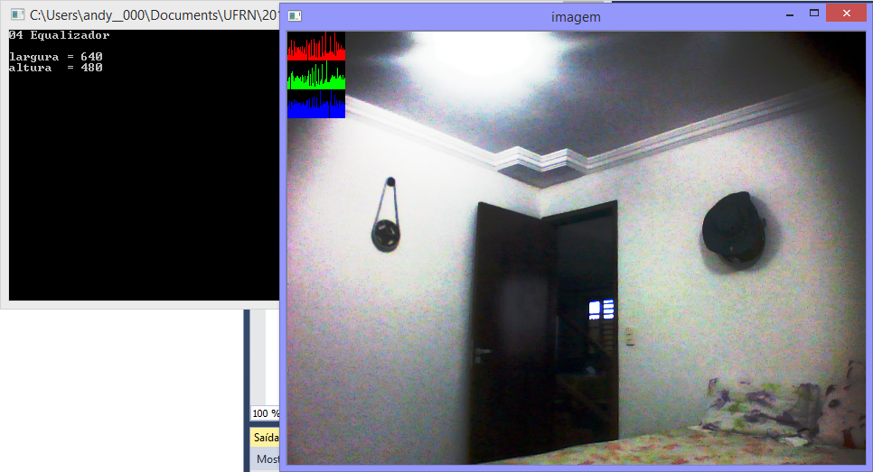
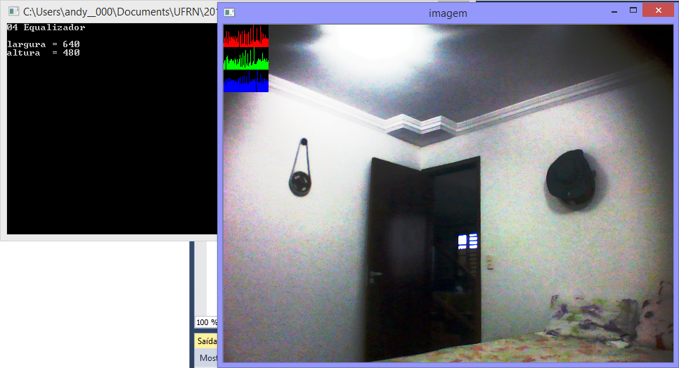

Processamento Digital de Imagens
1. Exercícios:
a) Regiões
#include < iostream >
#include < opencv2/opencv.hpp >
using namespace std;
using namespace cv;
//Regions
int main()
{
cout << "EXERCICIO 01 - REGIONS" << endl << endl;
Mat imagem;
Vec3b val;
imagem = imread("canguru.png", CV_LOAD_IMAGE_GRAYSCALE);
if (!imagem.data) {
cout << ("Nao abriu arquivo") << endl;
}
else {
int P1x, P1y, P2x, P2y;
int altura = imagem.size().height;
int largura = imagem.size().width;
cout << "A imagem tem altura " << altura << " e largura " << largura << endl << endl;
cout << "Digite um ponto P1." << endl;
while (1) {
cout << "Coordenada X: ";
cin >> P1x;
if (P1x > 0 && P1x < largura) {
break;
}else {
cout << "O Valor deve estar entre 1 e " << largura << endl;
}
}
while (1) {
cout << "Coordenada Y: ";
cin >> P1y;
if (P1y > 0 && P1y < altura) {
break;
}
else {
cout << "O Valor deve estar entre 1 e " << altura << endl;
}
}
cout << endl << "Digite um ponto P2." << endl;
while (1) {
cout << "Coordenada X: ";
cin >> P2x;
if (P2x > 0 && P2x < largura) {
break;
}
else {
cout << "O Valor deve estar entre 1 e " << largura << endl;
}
}
while (1) {
cout << "Coordenada Y: ";
cin >> P2y;
if (P2y > 0 && P2y < altura) {
break;
}
else {
cout << "O Valor deve estar entre 1 e " << altura << endl;
}
}
imshow("janela (Original)", imagem);
waitKey(3000);
//Negativo de uma imagem eh: 255 - valor de cor do pixel.
for (int i = P1x; i < P2x ; i++) {
for (int j = P1y ;j < P2y ;j++) {
imagem.at<uchar>(i, j) = 255 - imagem.at<uchar>(i, j);
}
}
imshow("janela (Modificada)", imagem);
}
waitKey();
return 0;
}


b) Troca regiões
#include < iostream >
#include < opencv2/opencv.hpp >
using namespace std;
using namespace cv;
//Troca Regioes
int main()
{
cout << "EXERCICIO 02 - TROCA REGIOES" << endl << endl;
Mat imagem;
Mat imagemAUX;
imagem = imread("canguru.png", CV_LOAD_IMAGE_GRAYSCALE);
imagemAUX = imread("canguru.png", CV_LOAD_IMAGE_GRAYSCALE);
if (!imagem.data) {
cout << ("Nao abriu arquivo") << endl;
}
else {
imshow("janela (Original)", imagem);
waitKey(3000);
int P1x, P1y, P2x, P2y;
int altura = imagem.size().height;
int largura = imagem.size().width;
int meiaAltura = altura / 2;
int meiaLargura = largura / 2;
//Primeiro Quadrante
for (int i = 0; i < meiaAltura; i++) {
for (int j = 0; j < meiaLargura; j++) {
imagem.at<uchar>(i, j) = imagemAUX.at<uchar>(i + meiaAltura, j + meiaLargura);
}
}
//Segundo Quadrante
for (int i = meiaAltura; i < altura; i++) {
for (int j = 0; j < meiaLargura; j++) {
imagem.at<uchar>(i, j) = imagemAUX.at<uchar>(i - meiaAltura, j + meiaLargura);
}
}
//Terceiro Quadrante
for (int i = 0; i < meiaAltura; i++) {
for (int j = meiaLargura; j < largura; j++) {
imagem.at<uchar>(i, j) = imagemAUX.at<uchar>(i + meiaAltura, j - meiaLargura);
}
}
//Quarto Quadrante
for (int i = meiaAltura; i < altura; i++) {
for (int j = meiaLargura; j < largura; j++) {
imagem.at<uchar>(i, j) = imagemAUX.at<uchar>(i - meiaAltura, j - meiaLargura);
}
}
imshow("janela (Modificada)", imagem);
}
waitKey();
return 0;
}
c) Corrigindo Labeling
No programa labeling.cpp, se houver o caso em que haja mais de 255 objetos na imagem, A rotulação chegará a um valor que atrapalhará o processo. O problema pode ser corrigido alterando a linha de código abaixo:
floodFill(image,p,nobjects);
fixando o valor da variavel, mudamos para, por exemplo:
floodFill(imagem, p, 100);
d) Conta Buracos
#include < iostream >
#include < opencv2/opencv.hpp >
using namespace std;
using namespace cv;
int main()
{
cout << "03 CONTA BURACOS" << endl << endl;
Mat imagem, mask;
int altura, largura;
int nobjects, nburaco;
CvPoint p;
imagem = imread("bolhas.png", CV_LOAD_IMAGE_GRAYSCALE);
if (!imagem.data) {
cout << "imagem nao carregou corretamente\n";
return(-1);
}
altura = imagem.size().height;
largura = imagem.size().width;
p.x = 0;
p.y = 0;
//Apaga Buracos nas borda verticais
for (int i = 0; i < altura; i++) {
p.x = 0;
if (imagem.at<uchar>(i, p.x) == 255) {
p.y = i;
floodFill(imagem, p, 0);
}
p.x = largura - 1;
if (imagem.at<uchar>(i, p.x) == 255) {
p.y = i;
floodFill(imagem, p, 0);
}
}
//Apaga Buracos nas borda Horizontais
for (int i = 0; i < largura; i++) {
p.y = 0;
if (imagem.at<uchar>(p.y, i) == 255) {
p.x = i;
floodFill(imagem, p, 0);
}
p.y = altura - 1;
if (imagem.at<uchar>(p.y, i) == 255) {
p.x = i;
floodFill(imagem, p, 0);
}
}
p.x = 0;
p.y = 0;
//Pinta o fundo de outra cor diferente do preto original
floodFill(imagem, p, 1);
// Conta quantos objetos tem
nobjects = 0;
for (int i = 0; i < altura; i++) {
for (int j = 0; j < largura; j++) {
if (imagem.at<uchar>(i, j) == 255) {
// achou um objeto
nobjects++;
p.x = j;
p.y = i;
floodFill(imagem, p, 100);
}
}
}
p.x = 0;
p.y = 0;
nburaco = 0;
for (int i = 0; i < altura; i++) {
for (int j = 0; j < largura; j++) {
if (imagem.at<uchar>(i, j) == 0 && imagem.at(i, j - 1) == 100) {
// achou um buraco
nburaco++;
p.x = j;
p.y = i;
floodFill(imagem, p, 150);
p.x = j - 1;
floodFill(imagem, p, 50);
}
}
}
cout << "A imagem possui " << nobjects << " objetos, " << nburaco <<" com buracos." << endl;
imshow("imagem", imagem);
imwrite("novo.png", imagem);
waitKey();
return 0;
}
OBS: Modifiquei a imagem Bolhas.png original, colocando 3 buracos em uma bolha para verificar a eficiência do programa.
e) Equalização
#include < iostream >
#include < opencv2/opencv.hpp >
using namespace std;
using namespace cv;
int main()
{
cout << "04 Equalizador" << endl << endl;
Mat imagem;
int largura, altura;
VideoCapture cap;
vector<Mat> planes;
Mat histR, histG, histB;
int nbins = 64;
float range[] = { 0, 256 };
const float *histrange = { range };
bool uniform = true;
bool acummulate = false;
cap.open(0);
if (!cap.isOpened()) {
cout << "cameras indisponiveis";
return -1;
}
largura = cap.get(CV_CAP_PROP_FRAME_WIDTH);
altura = cap.get(CV_CAP_PROP_FRAME_HEIGHT);
cout << "largura = " << largura << endl;
cout << "altura = " << altura << endl;
int histw = nbins, histh = nbins / 2;
Mat histImgR(histh, histw, CV_8UC3, Scalar(0, 0, 0));
Mat histImgG(histh, histw, CV_8UC3, Scalar(0, 0, 0));
Mat histImgB(histh, histw, CV_8UC3, Scalar(0, 0, 0));
while (1) {
cap >> imagem;
split(imagem, planes);
//Equalização
equalizeHist(planes[0], planes[0]);
equalizeHist(planes[1], planes[1]);
equalizeHist(planes[2], planes[2]);
merge(planes, imagem);
//fim dela
calcHist(&planes[0], 1, 0, Mat(), histR, 1,
&nbins, &histrange,
uniform, acummulate);
calcHist(&planes[1], 1, 0, Mat(), histG, 1,
&nbins, &histrange,
uniform, acummulate);
calcHist(&planes[2], 1, 0, Mat(), histB, 1,
&nbins, &histrange,
uniform, acummulate);
normalize(histR, histR, 0, histImgR.rows, NORM_MINMAX, -1, Mat());
normalize(histG, histG, 0, histImgG.rows, NORM_MINMAX, -1, Mat());
normalize(histB, histB, 0, histImgB.rows, NORM_MINMAX, -1, Mat());
histImgR.setTo(Scalar(0));
histImgG.setTo(Scalar(0));
histImgB.setTo(Scalar(0));
for (int i = 0; i < nbins; i++) {
line(histImgR,
Point(i, histh),
Point(i, histh - cvRound(histR.at(i))),
Scalar(0, 0, 255), 1, 8, 0);
line(histImgG,
Point(i, histh),
Point(i, histh - cvRound(histG.at(i))),
Scalar(0, 255, 0), 1, 8, 0);
line(histImgB,
Point(i, histh),
Point(i, histh - cvRound(histB.at(i))),
Scalar(255, 0, 0), 1, 8, 0);
}
histImgR.copyTo(imagem(Rect(0, 0, nbins, histh)));
histImgG.copyTo(imagem(Rect(0, histh, nbins, histh)));
histImgB.copyTo(imagem(Rect(0, 2 * histh, nbins, histh)));
imshow("imagem", imagem);
if (waitKey(30) >= 0) break;
}
return 0;
}
 

f) Detector de Movimento
#include < iostream >
#include < opencv2/opencv.hpp >
using namespace std;
using namespace cv;
int main()
{
cout << "05 Detector de Movimento" << endl << endl;
Mat imagem;
int largura, altura;
VideoCapture cap;
vector<Mat> planes;
Mat histB, hist_old;
int nbins = 64;
float range[] = { 0, 256 };
const float *histrange = { range };
bool uniform = true;
bool acummulate = false;
cap.open(0);
if (!cap.isOpened()) {
cout << "cameras indisponiveis";
return -1;
}
largura = cap.get(CV_CAP_PROP_FRAME_WIDTH);
altura = cap.get(CV_CAP_PROP_FRAME_HEIGHT);
cout << "largura = " << largura << endl;
cout << "altura = " << altura << endl;
int histw = nbins, histh = nbins / 2;
Mat histImgB(histh, histw, CV_8UC3, Scalar(0, 0, 0));
bool primeiro = true;
int n=0;
//Esperar preparar camera
while (n < 100) {
cap >> imagem;
imshow("imagem", imagem);
n++;
}
//fim
n = 0;
while (1) {
cap >> imagem;
split(imagem, planes);
calcHist(&planes[2], 1, 0, Mat(), histB, 1,
&nbins, &histrange,
uniform, acummulate);
if (primeiro) {
hist_old = histB.clone();
primeiro = false;
}
double compara = compareHist(histB, hist_old, CV_COMP_CHISQR);
if (compara > 900) {
cout << compara << endl;
putText(imagem, "ALERTA!!", cvPoint(50, 250), CV_FONT_HERSHEY_DUPLEX, 4, cvScalar(0, 0, 255), 1, CV_AA);
if (n % 5 == 0) {
string texto = "invasor" + to_string(n) + ".png";
imwrite(texto, imagem);
}
n++;
}
hist_old = histB.clone();
imshow("imagem", imagem);
if (waitKey(30) >= 0) break;
}
return 0;
}
c) Filtro Espacial I
#include < iostream >
#include < opencv2/opencv.hpp >
using namespace cv;
using namespace std;
void printmask(Mat &m) {
for (int i = 0; i < m.size().height; i++) {
for (int j = 0; j < m.size().width; j++) {
cout << m.at(i, j) << ",";
}
cout << endl;
}
}
void menu() {
cout << "\npressione a tecla para ativar o filtro: \n"
"a - calcular modulo\n"
"m - media\n"
"g - gauss\n"
"v - vertical\n"
"h - horizontal\n"
"l - laplaciano\n"
"z - laplaciano do gaussiano\n"
"esc - sair\n";
}
int main(int argvc, char** argv) {
VideoCapture video;
float media[] = { 1,1,1,
1,1,1,
1,1,1 };
float gauss[] = { 1,2,1,
2,4,2,
1,2,1 };
float horizontal[] = { -1,0,1,
-2,0,2,
-1,0,1 };
float vertical[] = { -1,-2,-1,
0,0,0,
1,2,1 };
float laplacian[] = { 0,-1,0,
-1,4,-1,
0,-1,0 };
float laplaglass[] = { 0,0,1,0,0,
0,1,2,1,0,
1,2,-16,2,1,
0,1,2,1,0,
0,0,1,0,0 };
Mat cap, frame, frame32f, frameFiltered;
Mat mask(3, 3, CV_32F), mask1;
Mat result, result1;
double width, height, min, max;
int absolut;
char key;
video.open(0);
if (!video.isOpened())
return -1;
width = video.get(CV_CAP_PROP_FRAME_WIDTH);
height = video.get(CV_CAP_PROP_FRAME_HEIGHT);
std::cout << "largura=" << width << "\n";;
std::cout << "altura =" << height << "\n";;
namedWindow("filtroespacial", 1);
mask = Mat(3, 3, CV_32F, media);
scaleAdd(mask, 1 / 9.0, Mat::zeros(3, 3, CV_32F), mask1);
swap(mask, mask1);
absolut = 1; // calcs abs of the image
menu();
for (;;) {
video >> cap;
cvtColor(cap, frame, CV_BGR2GRAY);
flip(frame, frame, 1);
imshow("original", frame);
frame.convertTo(frame32f, CV_32F);
filter2D(frame32f, frameFiltered,
frame32f.depth(), mask, Point(1, 1), 0);
if (absolut) {
frameFiltered = abs(frameFiltered);
}
frameFiltered.convertTo(result, CV_8U);
imshow("filtroespacial", result);
key = (char)waitKey(10);
if (key == 27) break; // esc pressed!
switch (key) {
case 'a':
menu();
absolut = !absolut;
break;
case 'm':
menu();
mask = Mat(3, 3, CV_32F, media);
scaleAdd(mask, 1 / 9.0, Mat::zeros(3, 3, CV_32F), mask1);
mask = mask1;
printmask(mask);
break;
case 'g':
menu();
mask = Mat(3, 3, CV_32F, gauss);
scaleAdd(mask, 1 / 16.0, Mat::zeros(3, 3, CV_32F), mask1);
mask = mask1;
printmask(mask);
break;
case 'h':
menu();
mask = Mat(3, 3, CV_32F, horizontal);
printmask(mask);
break;
case 'v':
menu();
mask = Mat(3, 3, CV_32F, vertical);
printmask(mask);
break;
case 'l':
menu();
mask = Mat(3, 3, CV_32F, laplacian);
printmask(mask);
break;
case 'z':
menu();
mask = Mat(5, 5, CV_32F, laplaglass);
printmask(mask);
break;
default:
break;
}
}
return 0;
}

c) Corrigindo Labeling